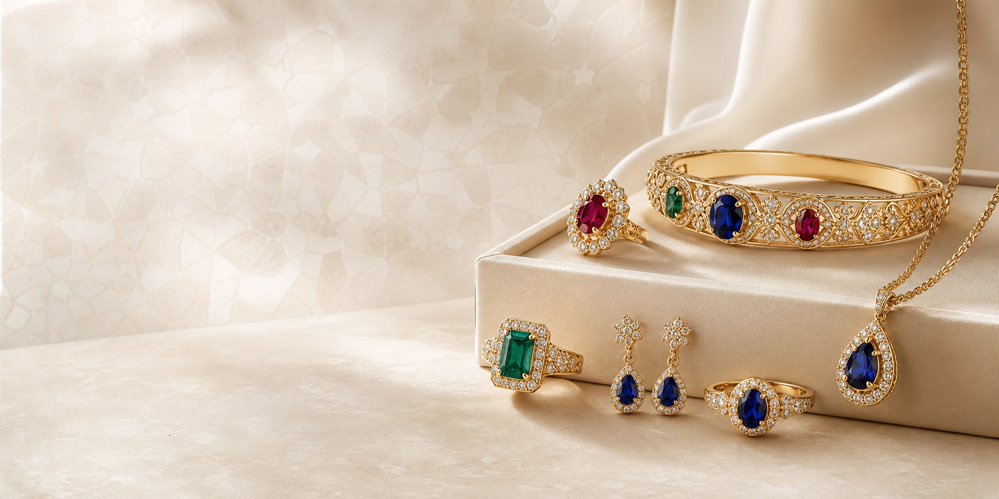

Pierres précieuses seules
Une sélection de pierres choisies pour leur couleur, leur éclat et leur caractère. Chaque pierre peut être acquise seule ou devenir le point de départ d'une création personnalisée.
Voir les pierresMaison Aurel réunit une sélection de saphirs, rubis, émeraudes et diamants de laboratoire, proposés en pierres seules, en créations prêtes à porter ou en pièces réalisées sur demande.

Maison Aurel vous accompagne dans le choix d'une pierre seule, d'un bijou prêt à porter ou d'une création sur-mesure pensée autour de votre style et de l'émotion recherchée.
Une sélection de pierres choisies pour leur couleur, leur éclat et leur caractère. Chaque pierre peut être acquise seule ou devenir le point de départ d'une création personnalisée.
Voir les pierresDes créations prêtes à porter, pensées pour mettre en valeur la pierre dans une ligne sobre, équilibrée et intemporelle.
Voir les créationsUne création pensée autour de votre pierre, de votre style et de l'émotion recherchée. Maison Aurel vous accompagne de la sélection de la gemme au dessin final de la pièce.
Demander une pièce sur-mesureLes indications de prix restent discrètes et peuvent évoluer selon le poids d'or, la pierre, la taille et le travail de montage.
Des pièces épurées, construites autour d'une pierre centrale et d'une ligne sobre.
Voir la gammeDes pièces de caractère, plus travaillées, avec une présence plus marquée et des finitions détaillées.
Voir la gammeÉlégance, profondeur et intemporalité. Une pierre bleue qui traverse les styles sans perdre sa force.
Caractère, passion et intensité. Une présence chaude pour des bijoux expressifs mais raffinés.
Distinction, rareté et raffinement. Son vert donne immédiatement une allure singulière.
Éclat, modernité et précision. Une pierre contemporaine à la lecture claire.
Chaque pierre est choisie pour son éclat, sa couleur et son adéquation au bijou imaginé.
Maison Aurel precise la nature des pierres, notamment lorsqu'il s'agit de diamant de laboratoire.
Les montages sont penses pour proteger la pierre et accompagner un usage quotidien raisonnable.
Lorsqu'elle est disponible, une fiche ou un certificat accompagne la pièce pour mieux comprendre son achat.
Maison Aurel cultive une approche contemporaine de la pierre : sélection exigeante, lignes sobres, conseil personnalisé et recherche d'équilibre entre éclat, matière et finition.
Découvrir la maisonCouleur, taille, éclat et intention du bijou.
Pendentif, bague ou création personnalisée.
Montage en or avec attention aux proportions.
Livraison ou remise selon les modalités convenues.
Entretien, port quotidien et suivi de la pièce.
Des repères simples pour comparer couleur, éclat, usage quotidien et création sur-mesure avant de commander un bijou.
Une pierre profonde, élégante et facile à associer à l'or pour un bijou durable.
Lire le guideLes points à regarder avant de choisir un rubis pour une bague ou un pendentif.
Lire le guideComment décider entre acquérir une pierre seule ou demander une création complète.
Lire le guideExpliquez votre intention, la pierre qui vous attire ou le style recherche. Maison Aurel vous recontacte pour orienter le choix.